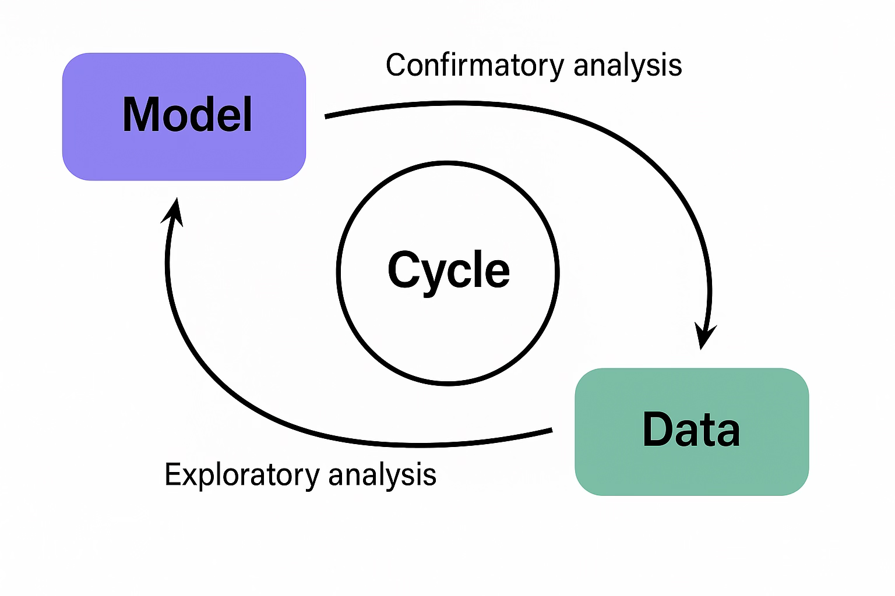
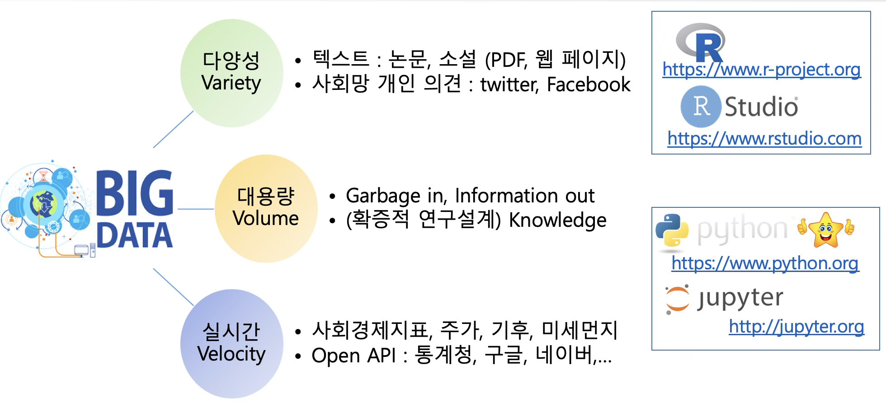
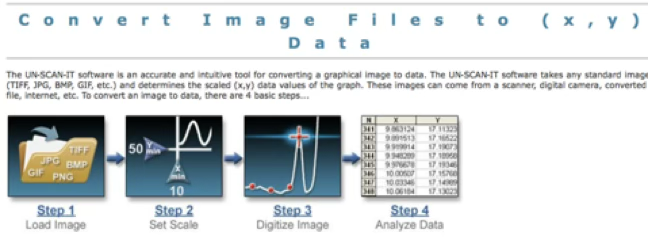
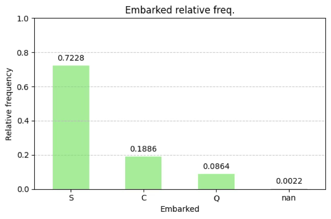
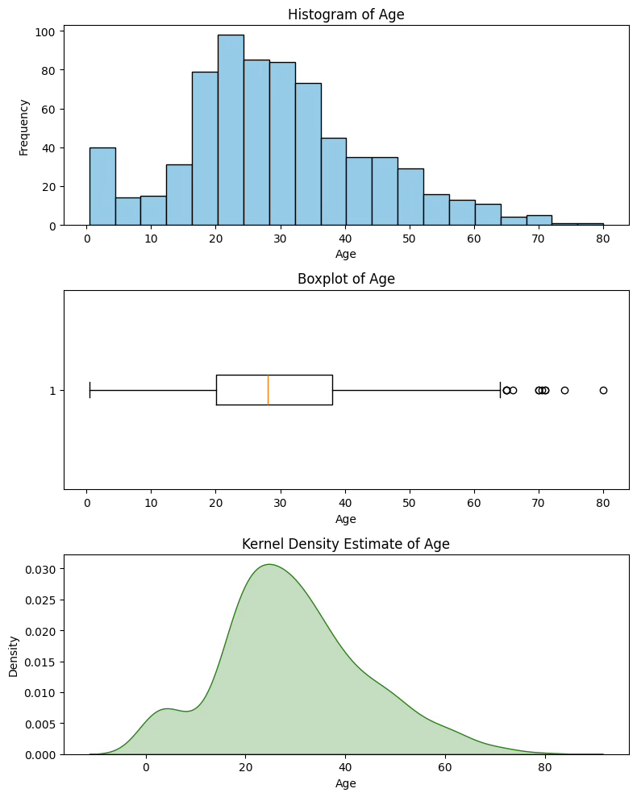

기초통계 2. 데이터 개념
chapter 1. 데이터란?
1. 데이터 철학
과학은 단순한 이론의 축적이 아니라, 경험과 관찰, 모델과 검증, 이론과 현실 사이의 끊임없는 상호작용을 통해 발전해왔다. 아인슈타인의 상대성 이론이나 케플러의 행성 궤도 법칙처럼 이론적 통찰과 천문학적 관측을 바탕으로 탄생한 위대한 발견들은 역사에 길이 남지만, 과학의 진보 대부분은 반복적인 실험과 자료 분석을 통해 이루어진다.
예를 들어, 벼 품종 개량은 수많은 세대에 걸친 교배 실험과 생육 결과 분석을 통해 이루어졌다. 신약 개발은 초기 후보 물질의 효과를 확인하기 위해 수천 건의 실험 설계와 통계 검증을 거쳐 승인된다. 화학 공정 개선 역시 다양한 조건에서 반복되는 실험과 그 결과에 대한 정량적 분석을 통해 점진적으로 최적화된다.
이러한 흐름은 통계학이 과학의 핵심적인 실천 도구임을 명확히 보여준다.
통계학자는 과학의 번역자이자 검증자이다.
통계 전문가는 자연과학자, 공학자, 사회과학자가 제안한 이론이나 아이디어를 통계적 언어로 변환하는 역할을 수행한다.
먼저, 제시된 이론이나 현상에 대한 가설을 통계적으로 정의한다. 예를 들어, ”A 약물이 B 약물보다 혈압을 더 많이 낮춘다”는 주장을 귀무가설과 대립가설로 구체화한다.
다음으로, 이 가설을 검정하기 위해 데이터를 수집하거나 실험을 설계한다. 이후 분석 결과를 바탕으로 가설의 유의성을 판단하며, 이러한 과정을 확증적 데이터 분석이라 한다.
반대로, 명시적 이론이 없는 상태에서 데이터를 먼저 탐색하여 새로운 규칙이나 관계를 발견하는 방식도 있다. 이를 탐색적 데이터 분석이라 하며, 특히 빅데이터 분석과 데이터 마이닝 분야에서 활발히 활용된다.
탐색과 확증의 순환: 이론 발전의 실제 구조
과학 이론이 견고해지기 위해서는 단순히 데이터를 수집하거나 수식을 세우는 것만으로는 부족하다. 탐색과 확증이 상호 순환하며 이론을 수정·보완하는 과정이 필수적이다. 중요한 점은 이론, 데이터, 모형이 각각 독립적으로 존재하는 것이 아니라 유기적으로 순환하며 서로 영향을 주고받는다는 철학적 관점이다. 이를 위해서는 다음 세 가지 요소가 반드시 함께 고려되어야 한다.
1. 도메인 지식: 의학, 농업, 교육 등 해당 분야에 대한 배경 지식 없이는 데이터 해석이나 의미 있는 가설 설정이 어렵다.
2. 통계 모형과 자료: 자료 수집과 해석을 위해 적절한 통계 모형을 설정해야 하며, 수집된 자료는 해당 모형을 충실히 반영하도록 설계되어야 한다.
3. 이론–모형–데이터의 순환 구조: 이론에서 모형을 도출하고, 데이터를 통해 이를 검정한 뒤, 결과를 반영해 이론을 수정하는 순환이 반복되어야 한다. 이 순환을 이해하고 실천하는 능력은 데이터 과학자와 통계학자의 핵심 역량이다.
데이터는 도구이자 통찰의 창구
통계학은 단순한 ”숫자를 다루는 기술”이 아니라, 현상에 내재한 구조를 탐색하고 이를 이론으로 일반화하는 사고의 방식이다. 통계 전문가는 이론을 수학적으로 표현하고 검정할 수 있도록 연결하는 다리 역할을 하며, 데이터는 그 다리를 통해 현실 세계와 학문을 이어주는 통찰의 통로가 된다.
2. 모형과 데이터의 순환 사이클
과학적 연구는 흔히 ’이론을 먼저 제안하고, 이를 검증하기 위해 데이터를 수집하는 과정’으로 이해된다. 그러나 실제 연구 현장에서는 데이터가 먼저 수집되고, 그 안에서 의미 있는 패턴이나 관계를 발견한 뒤, 이를 바탕으로 새로운 이론이나 모형이 제시되는 경우가 훨씬 더 많다.

이러한 흐름은 데이터 기반 탐색적 분석의 발달과 함께 그 중요성이 더욱 커지고 있다. 과학적 이론은 종종 자료의 구조나 경향을 탐색하는 과정에서 도출되며, 이렇게 제안된 이론이나 통계적 모형은 다시 확증적 분석을 통해 유의성과 적합성을 검증받는다.
따라서 통계에서의 모형과 데이터는 일방향적인 직선 구조가 아니라, 탐색과 확증이 반복되는 순환 구조를 형성한다.
모형과 데이터의 순환 흐름
1. 데이터 수집: 실험, 관찰, 센서 등 다양한 방법으로 자료를 수집한다.
2. 탐색적 분석(EDA): 그래프나 요약 통계를 활용하여 패턴, 변수 간 관계, 이상값 등을 파악하고, 이를 바탕으로 잠정적인 모형 또는 이론의 단서를 도출한다.
3. 모형 수립: 탐색 과정에서 발견된 패턴을 설명할 수 있는 통계적 또는 수학적 모형을 설정한다.
4. 모형 검증(CDA): 설정된 모형이 데이터에 얼마나 적합한지를 통계적으로 검증한다. 유의성 검정과 적합도 판단을 수행한다.
5. 이론 수정 또는 확장: 검증 결과를 토대로 이론을 강화하거나 수정한다. 이후 수정된 이론에 따라 새로운 데이터 수집과 분석이 반복된다.
이러한 순환 구조를 통해 과학은 진보하며, 통계학은 그 중심에서 핵심적인 역할을 수행한다.
통계 모형은 현실의 ’요약’일 뿐
통계학에서 말하는 모형은 현실의 ’진실’ 자체가 아니라, 현실을 설명하려는 수학적 요약 또는 근사에 불과하다. 모형은 대상 현상을 완전하게 표현하지 못하며, 항상 일정한 오차(error)를 포함한다. 예를 들어, 단순 회귀모형은 다음과 같이 표현된다:
\(Y_{i} = \beta_{0} + \beta_{1}X_{i} + \varepsilon_{i}\) 여기서,
\(\beta_{0},\beta_{1}\)은 모형의 계수로서, 변수 간의 관계를 요약한다.
\(\varepsilon_{i}\)는 오차항으로, 모형이 설명하지 못한 부분을 나타낸다. 이 오차항은 \(\varepsilon_{i} \sim N(0,\sigma^{2})\)을 가정된다:
즉, 회귀모형은 현실 세계의 완벽한 진리를 설명하는 것이 아니라, 주어진 데이터를 가장 잘 설명하는 근사적 구조를 제시하는 도구일 뿐이다. 이 점을 이해하는 것은 통계학적 사고의 핵심이다.
통계 분석은 순환하는 탐색과 검증의 과정이다.
통계 분석은 데이터 → 이론 → 검증 → 데이터로 이어지는 반복적 사이클 속에서 이루어진다. 이 순환은 과학적 진리 탐구의 핵심 구조이며, 통계학자는 이 흐름을 수학적·계량적 방법으로 구체화하고 안내하는 역할을 수행한다.
따라서 통계학을 학습하는 학생은 단순한 계산 능력에 머무르지 않고, 데이터와 모형 사이의 철학적 관계와 순환적 구조를 이해하는 태도를 갖추어야 한다.
3. 데이터 정의
데이터는 통계학을 포함한 수많은 학문과 산업 분야에서 핵심 자원으로 활용된다. 사전적 정의에 따르면, 데이터란 ”추론, 정보 획득, 계산에 사용되는 실제 조사되거나 측정된 값”을 의미한다(Webster Dictionary). 통계학의 관점에서 데이터는 단순한 숫자의 나열이 아니라, 정보를 담고 있는 숫자의 체계적인 집합이다.
데이터란 무엇인가?
통계학에서 데이터는 분석의 대상이 되는 개체로부터 변수를 측정하거나 관측하여 얻은 값들의 집합이다. 이러한 데이터는 수치일 수도 있고 문자일 수도 있으며, 표나 행렬과 같이 구조화되어야 분석이 가능하다. 즉, 데이터는 수학적으로 표현 가능한 형태로 정리되어야 하며, 이를 통해 다양한 통계적 추론이 가능해진다.
통계학에서의 데이터 구조
통계학에서 분석하는 데이터는 보통 행과 열로 구성된 2차원 테이블(또는 행렬) 형태를 가진다.
행: 개별 관측 단위, 즉 개체의 관측값
열: 각 개체에 대해 측정된 변수
\[\begin{bmatrix} x_{11} & x_{12} & \cdots & x_{1p} \\ x_{21} & x_{22} & \cdots & x_{2p} \\ \vdots & \vdots & \ddots & \vdots \\ x_{n1} & x_{n2} & \cdots & x_{np} \end{bmatrix}\]
\(x_{ij}\)는 \(i\)번째 개체의 \(j\)번째 변수에 대한 관측값이다.
총 \(n\)개의 개체, \(p\)개의 변수로 구성된 데이터를 \(n \times p\) 행렬이라 부른다.
데이터는 통계학의 출발점
구조화된 데이터를 기반으로 통계학은 기술, 추론, 예측을 수행한다. 정확한 분석을 위해서는 단순히 수치를 수집하는 것에 그치지 않고, 어떤 개체로부터 어떤 변수를 어떤 방식으로 측정했는지를 명확히 정의하는 것이 무엇보다 중요하다.
4. 데이터 종류
데이터는 관측 대상의 특성을 표현한 정보이며, 그 특성의 종류에 따라 구분 기준과 분석 방법이 달라진다. 통계학에서는 이러한 구분을 변수의 성격에 따라 나누며, 사회과학에서는 이를 측정수준이라고 부르기도 한다. 데이터의 성격을 명확히 분류하는 것은 통계 분석의 첫걸음이다. 변수의 유형에 따라 적절한 요약 방법(예: 평균, 중앙값, 빈도 등)과 분석 기법(예: t-검정, 카이제곱 검정, 회귀분석 등)이 달라지기 때문이다. 따라서 통계학을 공부하는 학생은 단순히 수치를 다루는 것뿐만 아니라, 해당 수치가 어떤 성격의 변수에서 나온 것인지를 판단하는 눈을 길러야 한다.
(1) 질적변수와 양적변수
질적 변수 qualitative variable
질적 변수는 개체를 분류하거나 구분하기 위해 측정된 속성으로, 그 값은 숫자가 아니라 범주 형태로 주어진다. 예를 들어, 성별, 결혼 여부, 직업, 거주 지역과 같은 변수들은 수치 자체가 크기나 양을 의미하지 않으며, 단순히 어떤 집단에 속하는지를 나타낸다. 질적 변수는 다시 명목척도(nominal scale)와 서열척도(ordinal scale)로 구분된다.
명목척도는 각 개체를 단순히 구분하거나 식별하는 목적으로 사용된다. 예를 들어 성별(남/여), 혈액형(A/B/O/AB), 거주지(서울/부산) 등이 이에 해당한다. 이 변수들은 계산이 불가능하며, 오직 같은지 다른지만 비교할 수 있다.
서열척도는 명목척도와 달리 범주 간에 일정한 순서가 존재한다. 예를 들어 학점(A, B, C…), 소득 수준(상/중/하), 만족도(매우 만족 ~ 매우 불만족)와 같이 정해진 순서에 따라 분류된 변수들이다. 다만, 각 단계 간의 간격이 일정하다는 보장은 없기 때문에, 평균이나 표준편차와 같은 계산에는 제한이 따른다.
양적 변수 quantitative variable
양적 변수는 개체의 특성을 수치로 직접 측정한 변수로, 계산이 가능한 데이터를 제공한다. 키, 몸무게, 시험 점수, 소득, 교통량, 연령 등이 대표적인 예이다. 양적 변수는 데이터를 수량적으로 다룰 수 있기 때문에, 다양한 통계 분석에 활용된다. 양적 변수는 측정 수준에 따라 등간척도(interval scale)와 비율척도(ratio scale)로 구분된다.
등간척도는 변수의 값 사이 간격이 동일하다는 특징이 있지만, 절대적인 0의 의미가 없다. 대표적인 예로는 섭씨 또는 화씨 온도, 지능지수(IQ), 리커트 척도(예: 1~5점 척도)가 있다. 이 경우 덧셈과 뺄셈은 가능하지만, 배율의 비교는 의미가 없다. 예를 들어, 20도는 10도의 두 배라고 말할 수 없다.
비율척도는 등간척도의 성질을 모두 가지면서도, 0이 절대적 기준으로서 의미를 갖는다. 0은 ’존재하지 않음’을 나타내며, 모든 사칙연산(+, –, ×, ÷)이 가능하다. 예를 들어 키 0cm, 나이 0세, 수입 0원은 모두 해당 특성이 존재하지 않음을 의미하며, 10kg은 5kg의 두 배로 해석될 수 있다.
| 구간 | 비율 | 순서 | 명목 | |
| 빈도표 | X | X | X | X |
| 순서 있음 | X | X | X | |
| 최빈값 | X | X | X | X |
| 평균 | X | X | ||
| 중위수 | X | X | X | |
| +, - 가능 | X | X | ||
| 곱셈, 나누셈 | X | |||
| 0의 개념, 배율 | X |
(2) 시간에 따른 데이터의 구분
통계학에서 데이터를 분류할 때 중요한 기준 중 하나는 시간의 흐름이 반영되었는가이다. 같은 변수라도 시간에 따라 수집 방식이 달라지면, 분석 방법도 달라지게 된다. 시간을 기준으로 데이터는 크게 횡단 자료와 종단 자료로 나눌 수 있다.
횡단 자료 Cross-sectional Data
횡단 자료는 일정한 시점에서 여러 개체에 대해 수집한 데이터를 의미한다. 즉, 시간은 고정되어 있고, 관심의 대상은 동일한 시점에서의 개체 간 차이이다. 예를 들어, 2024년 현재 H대학교 재학생 500명의 키와 몸무게를 조사한 경우, 이는 하나의 시점에서 여러 사람의 특성을 수집한 전형적인 횡단 자료이다.
또한 한 해 동안 전국 시·도별 평균 월급, 병원별 환자 수, 기업별 연간 매출액 등을 조사한 자료도 모두 횡단 자료에 속한다. 횡단 자료에서는 시간 흐름을 고려하지 않기 때문에, 분석에서는 주로 개체 간 비교가 중심이 된다. 예를 들어, 학년별 평균 점수를 비교하거나, 지역별 소득 격차를 분석할 때 주로 사용된다.
종단 자료 Time Series Data
반면 종단 자료는 동일한 개체나 현상에 대해 시간의 흐름에 따라 연속적으로 수집한 데이터이다. 이 경우 시간은 분석에서 매우 중요한 변수가 되며, 이전 시점의 정보가 이후 결과에 영향을 줄 수 있는 구조를 갖는다. 예를 들어, 2010년부터 2024년까지 H대학교 총 입학자 수의 연도별 변화를 기록한 데이터는 종단 자료이다. 또한 국가의 월별 실업률, 일별 환율이나 주가, 연도별 수출입 규모처럼 시간 순서에 따라 관측된 경제 지표도 모두 종단 자료에 해당한다.
종단 자료에서는 추세(trend), 계절성(seasonality), 주기성(cycle), 예측 가능성 등 시간 구조의 특성이 중요하며, 이를 다루기 위한 시계열 분석 기법이 별도로 발달되어 있다.
(3) 인과관계와 변수의 역할
통계 분석에서 가장 궁극적인 질문 중 하나는 ”무엇이 무엇에 영향을 미치는가?“, 다시 말해 인과관계에 대한 것이다. 단순히 두 변수 간에 상관관계가 있다고 해서, 한 변수가 다른 변수의 원인이라고 단정할 수는 없다. 통계학은 이처럼 인과적 주장을 숫자와 모형을 통해 검증할 수 있는 과학적 체계로 정립하려는 학문이다.
인과관계는 통계분석이 아닌 모형 설정에서 시작된다.
인과 관계는 통계적 분석에 의해 ’발견’되는 것이 아니라, 이론이나 경험에 기반해 ’가정’되고, 그 가설이 통계적으로 ’검증’되는 것이다. 즉, 어떤 변수(\(X\))가 다른 변수(\(Y\))에 영향을 미친다는 인과적 주장 자체는 통계분석의 결과가 아니라, 연구자의 이론적 배경, 선행 연구, 또는 실험적 설계에 근거한 전제로 설정된다. 이러한 전제는 통계 모형을 구성할 때 반드시 명확히 표현되어야 하며, 그에 따라 추정과 검정이 이루어진다.
예를 들어, ”공부 시간이 많을수록 시험 점수가 높아진다”는 가설은 이론적으로 합리적일 수 있지만, 그 자체는 데이터가 말해주는 것이 아니다. 이 가설이 옳은지를 통계적 분석을 통해 검증하는 것이 통계학의 역할이다.
변수의 역할: 원인과 결과
인과관계를 분석하기 위해서는 변수들 사이의 역할을 명확히 구분해야 한다. 일반적으로 인과관계는 다음과 같은 두 변수로 구성된다:
독립변수 (X): 원인으로 작용하는 변수이다. ’독립변수’ 외에도 요인(factor), 처리변수(treatment), 예측변수(predictor), 설명변수(explanatory variable), 내생변수(endogenous variable) 등의 용어로 불리기도 한다.
종속변수 (Y): 결과로 나타나는 변수이며, 독립변수의 변화에 영향을 받는다. 통계학에서는 반응변수(response variable), 목표변수(target variable), 결과변수(outcome), 외생변수(exogenous variable) 등의 명칭으로도 사용된다.
예를 들어, 실험에서 비료의 종류가 벼 수확량에 미치는 영향을 분석하고자 할 때, 비료는 독립변수, 수확량은 종속변수가 된다.
인과관계와 통계 분석의 관계
통계적 모형, 예를 들어 회귀모형이나 분산분석 모형은 이러한 변수 간의 인과 구조를 수학적으로 표현한 도구이다. 그러나 통계적 유의성은 인과성 그 자체를 보장하지 않는다. 모형의 타당성은 분석 이전의 이론적 설계에 달려 있으며, 분석 결과는 그 이론을 지지하거나 반박할 수 있는 하나의 증거일 뿐이다. 따라서 인과관계를 제대로 이해하고 설명하기 위해서는 다음 세 가지가 모두 필요하다:
타당한 이론적 가설 설정
적절한 통계적 분석 모형 선택
해석의 주의와 제한점 인식
결론적으로, 통계 분석은 인과관계를 ”발견”하기 위한 도구가 아니라, 이미 제시된 인과 가설이 데이터에 의해 지지되는지를 평가하는 수단이다. 따라서 인과 추론은 통계학의 계산 능력뿐 아니라, 이론적 판단력과 연구 설계의 엄밀성을 요구하는 통합적 작업이라 할 수 있다.
(4) 데이터의 표현 형식과 분석 가능성
현대의 통계학과 데이터 과학은 단순한 숫자 자료뿐 아니라 다양한 형태의 비정형 데이터를 포함하여 다룰 수 있는 범위를 넓혀가고 있다. 데이터는 수집되는 방식이나 저장 형식에 따라 서로 다른 포맷으로 존재하며, 이를 어떻게 해석하고 처리할 수 있는지에 따라 분석 방법이 달라진다.통계학에서는 데이터를 수치화하여 분석하는 것이 일반적이지만, 문자, 음성, 영상 등 비정형 데이터도 일정한 전처리를 거쳐 수치 형태로 전환 가능하다.

숫자(numeric) 형태의 데이터
통계학에서 가장 기본이 되는 데이터 형식은 숫자이다. 이는 연속형 또는 이산형 수치로 존재하며, 대부분의 통계적 기법은 이러한 수치 데이터를 대상으로 설계되어 있다. 그러나 모든 숫자가 수학적으로 해석 가능한 것은 아니며, 숫자로 표현된 범주형(명목형) 데이터는 주의가 필요하다. 예를 들어, 성별을 남성(1), 여성(2)으로 부호화한다고 해도, ’2는 1보다 크다’는 수학적 해석은 적용되지 않는다. 이 경우, 숫자는 단지 범주를 구분하는 용도로 사용되며, 통계 소프트웨어에서는 class 변수나 factor 변수로 인식하여 범주형 처리한다.
문자(text) 데이터
문자 데이터는 자연어로 기록된 정보로, 전통적인 통계 분석보다는 텍스트 마이닝이나 자연어 처리(NLP) 기법을 통해 분석된다. 설문 응답의 자유서술형 항목, 뉴스 기사, SNS 댓글, 논문 초록, 이메일 내용 등 다양한 형태의 텍스트가 이에 해당한다. 문자 데이터는 전처리 과정을 거쳐 수치형 데이터로 변환된다. 예를 들어 단어의 출현 빈도를 기반으로 문서를 수치화하거나, 특정 키워드를 시각화한 워드 클라우드 형태로 분석 결과를 표현하기도 한다.
음성(audio) 데이터
음성은 인간의 대화를 포함한 소리의 파형으로, 본래는 오디오 파일 형식(mp3, wav 등)으로 저장된다. 하지만 이러한 파일도 디지털 신호처리 기술을 통해 시간 단위의 수치 데이터로 변환되며, 이를 통해 음성 분석, 감정 분석, 화자 인식 등 다양한 분석이 가능해진다.
예를 들어, 음성 파일에서 추출된 주파수, 진폭, 속도, 높낮이 등의 정보는 숫자 벡터로 표현되며, 기계학습이나 통계적 분류 모형에 입력값으로 활용될 수 있다. 반대로, 인공지능 기반 음성합성(TTS)에서는 숫자 데이터를 다시 음성으로 변환하기도 한다.

데이터 형식 간의 경계와 확장성
현대 통계학과 데이터 과학에서는 숫자, 문자, 음성, 영상, 센서 데이터 등 다양한 데이터 유형이 서로 융합되어 분석된다. 기존에는 통계학이 숫자 중심의 학문으로 이해되었지만, 이제는 다양한 데이터 포맷을 수치화하고 해석하는 기술이 통계학자의 중요한 역량이 되고 있다.
데이터가 어떤 형식으로 존재하든지 간에, 중요한 것은 분석 가능성이며, 이를 위해서는 데이터의 본질과 의미를 이해한 뒤, 적절한 방법으로 구조화하거나 수치화하는 것이 필수적이다.
chapter 2. 데이터와 확률변수
1. 확률이란 무엇인가?
확률(probability)은 어떤 사건이 발생할 가능성을 의미한다. 일상 대화에서 사람들은 확실한 표현을 선호한다. 예를 들어, ”오늘 비가 올 거야” 또는 ”정오에 만나자”와 같이 말한다. 그러나 현실에서 확실한 일은 거의 없으며, 우리의 삶은 대부분 확률적(probablistic) 요소로 구성되어 있다.
하늘이 아무리 어둡더라도 비가 올 것을 100% 확신할 수는 없다. 비가 올 가능성이 높더라도, 오지 않을 가능성은 작지만 존재한다. 마찬가지로 누군가와 정오에 만나기로 약속했더라도, 타이어 펑크, 교통 체증, 갑작스러운 업무 지시와 같은 변수로 인해 제시간에 도착하지 못할 확률이 있다.
우리는 대부분의 일을 확률적인 현상으로 인식하지 않고 확정된 사실처럼 표현한다. 이는 확률을 다루는 일이 불편하고 복잡하게 느껴지기 때문이다. 예를 들어 ”내일까지 우유가 더 필요할 것 같아”라고 말하는 것이 ”내일까지 우유가 하나 더 필요할 확률이 95%야”라고 말하는 것보다 훨씬 간단하다. 이러한 이유로 사람들은 확률에 대한 직관이 부족하며, 실제보다 확률을 과소평가하거나 잘못 이해하는 경우가 많다.
관찰 편향이 확률 추정의 오류를 유발한다.
관찰 편향(observation bias)이란, 어떤 사건을 직접 겪거나 목격한 경험이 해당 사건의 실제 발생 빈도를 왜곡해 인식하게 만드는 현상이다. 이 경우 사람들은 실제보다 더 자주 일어나는 것으로 착각하게 된다.
대표적인 사례가 항공기 사고에 대한 두려움이다. 많은 이들이 비행기를 탈 때 ”착륙하면 연락해”라는 당부를 받지만, 통계적으로는 비행 중보다 공항까지 이동하는 자동차 운전이 훨씬 위험하다. 2013년 미국의 경우 자동차 사고 사망자는 약 3만4천 명, 상업용 항공기 사고 사망자는 5명에 불과했다. 이동 거리를 고려하지 않더라도, 자동차 이용이 항공기 이용보다 수천 배 더 위험했다.
물론 위험 수준은 이동 거리와 연관된다. 자동차는 주행 거리가 길어질수록 위험이 커지고, 항공기는 주로 이륙과 착륙 구간에 위험이 집중된다. 하지만 하루 30마일을 운전하는 사람은 매일 500마일을 비행하는 사람보다 여전히 몇 배 높은 위험에 노출된다.
총기에 대한 공포 역시 비슷하다. 미국에서는 ’공격용 소총’에 의한 사망보다 맨주먹이나 발길질로 인한 사망이 두 배 많다. 그럼에도 불구하고 총기에 대한 위험 인식이 더 큰 이유는, 희귀하지만 충격적인 사건이 뉴스에서 크게 다뤄지기 때문이다.
언론 보도의 특성상, 일상적으로 발생하는 사건(예: 교통사고)은 잘 다뤄지지 않지만, 드문 사건(예: 항공기 추락)은 대규모 뉴스로 전파된다. 결과적으로 사람들은 뉴스에 자주 등장하는 사건을 실제보다 흔한 일로 착각하게 된다.
반복적 노출은 간접적인 관찰 편향을 초래한다.
관찰 편향의 한 형태는 동일한 주장이나 정보를 반복적으로 접하면서 형성된다. 예를 들어, ”어린이들은 스마트폰 때문에 공부에 집중하지 못한다”는 말을 방송, 기사, 주변 대화에서 여러 번 듣다 보면, 실제 통계 자료를 확인하지 않았더라도 그 주장이 사실이라고 믿게 될 수 있다.
이처럼 반복적 노출은 사건의 실제 빈도나 영향력을 과대평가하게 만들며, 경험적 검증 없이도 확신을 형성하게 하는 간접적 관찰 편향을 유발한다.
아무리 드문 사건이라도 시도 횟수가 충분하면 결국 발생한다.
지구와 소행성 충돌 가능성에 적용해 보자. 1년 안에 지구에 위험한 소행성이 충돌할 확률은 0.0003%로, 단기간에는 사실상 발생하지 않는 사건이다. 그러나 이 확률이 1만 년 동안 매년 반복되면 누적 확률은 약 3%로 증가한다. 10만 년이면 약 30%, 100만 년이면 약 96%에 이른다.
결국, 발생 확률이 아무리 작아도 시도 횟수나 시간이 충분히 길면 언젠가는 일어나는 것이 확률의 본질이다.
2. 확률변수와 데이터
통계학은 데이터를 수집하고 요약하는 기술에서 나아가, 그 데이터가 관측되기 전부터 어떤 값이 나올 가능성이 얼마나 되는지를 미리 수학적으로 설명하려는 이론적 틀, 즉 확률 이론을 바탕으로 한다. 이러한 확률 이론의 핵심 개념이 바로 확률변수이며, 통계학에서 다루는 데이터는 사실상 이 확률변수의 실현값이다.
확률변수란 무엇인가?
우리가 통계 분석을 통해 다루는 데이터는 단순한 숫자의 나열이 아니라, 불확실한 현상의 결과로서 관측된 값들이다. 이러한 불확실한 수치 결과를 수학적으로 다루기 위한 도구가 바로 확률변수이다. 확률변수(random variable)는 어떤 실험이나 조사에서 관측 가능한 결과를 숫자로 대응시키는 함수이다.
예를 들어, 동전을 던져 앞(Head)이 나오면 1, 뒤(Tail)이 나오면 0으로 대응시키는 것이 확률변수의 가장 단순한 예이다. 즉, 확률변수는 모든 가능한 관측 결과를 수치로 표현함으로써, 이후의 통계적 계산과 해석이 가능하게 한다.
데이터와 확률변수의 연결
통계학에서는 특정 현상에 대해 자료를 수집하고 분석한다. 이때 수집되는 데이터는 확률변수가 실제로 실현된 결과이며, 관측값 하나하나는 확률변수가 취할 수 있는 값 중 하나다. 예를 들어 H대학교 재학생 200명의 키 데이터를 수집하였다면, 이는 ’재학생의 키’라는 확률변수가 현실에서 특정 학생에게서 나타난 값(실현값)의 집합이다.
정리하면, 데이터는 확률변수의 표본 실현값, 즉 관측된 값들이며,확률변수는 그 데이터를 산출한 수학적 메커니즘이다.
확률분포와 확률밀도함수
확률변수는 단지 수치 값을 가질 수 있다는 사실뿐만 아니라, 어떤 값이 얼마나 자주, 또는 얼마나 자주 발생할 가능성이 있는가에 대한 정보도 함께 가진다. 이러한 정보를 정리한 것이 바로 확률분포이다. 확률분포는 확률변수가 가질 수 있는 값과, 그 값이 발생할 가능성(확률) 사이의 관계를 표현한 함수이다. 확률분포는 이산형 확률변수의 경우 확률질량함수로, 연속형 확률변수의 경우 확률밀도함수로 정의된다.
확률밀도함수(PDF)의 의미
연속형 확률변수에 대해, 확률밀도함수 \(f(x)\)는 다음과 같은 의미를 가진다:
\(f(x)\) 자체는 특정 값 \(x\)의 확률이 아니라, 해당 점에서의 상대적인 가능성을 나타내는 밀도이다.
실제 확률은 구간 단위로 계산되며, 예를 들어 \(a \leq X \leq b\)의 확률은 \(P(a \leq X \leq b) = \int_{a}^{b}f(x)dx\) 로 주어진다.
PDF는 데이터가 가진 모든 정보를 담고 있다.
확률밀도함수는 단순히 가능성만 나타내는 것이 아니라, 데이터가 가질 수 있는 전체적인 구조적 특성을 요약한다. 예를 들어,
\(f(x)\)의 정점은 가장 자주 관측되는 값(최빈값, mode)을 의미
곡선의 넓이는 특정 범위 내에서 값이 나타날 가능성(확률)을 보여준다.
분포의 비대칭성(skewness)이나 퍼짐(spread) 등도 함수 형태를 통해 직관적으로 이해할 수 있다.
또한 확률밀도함수는 데이터가 어떤 값을 중심으로 분포하는지(중심위치), 어떤 구간에서 데이터가 주로 나타나는지(분포 범위), 극단적 값은 얼마나 발생하는지(꼬리의 두께) 등에 대한 정보를 모두 포함한다.
데이터의 수학적 해석을 위한 핵심 개념
데이터 분석은 본질적으로 확률변수의 실현값을 관찰하고, 이를 바탕으로 확률분포를 추정하거나 검정하는 과정이다. 따라서 확률변수와 확률밀도함수의 개념을 이해하는 것은 단순한 수학적 이론을 넘어,현실 세계의 불확실성을 수치적으로 해석하고 설명하는 데 있어 핵심적인 출발점이다. 데이터는 단순한 숫자의 나열이 아니라, 확률적 구조를 가진 함수적 대상이다. 따라서 통계 분석은 이러한 구조를 바탕으로 이루어지며, 데이터에 기반한 분석의 흐름을 이해하는 것은 통계학의 핵심이다.
chapter 3. 데이터와 요약통계
일변량 분석은 하나의 변수에 대한 자료 분포를 이해하고 요약하는 데 목적을 둔다. 이때 가장 기본적이고 핵심적인 분석 도구는 숫자 요약이며, 이는 주어진 데이터가 어떠한 중심 경향, 산포, 그리고 분포 형태를 갖고 있는지를 수치적으로 요약하여 설명한다.
1. 범주형 데이터
범주형 변수는 관측값이 수치가 아닌 범주 또는 집단 수준에서 구분되는 변수를 의미한다. 예를 들어, 성별(남/여), 지역(서울/부산/광주), 고객 등급(일반/우수/VIP) 등이 이에 해당한다. 이러한 변수에 대한 일변량 분석은 수치적 요약보다는 빈도와 비율을 통한 분포의 구조 파악에 초점을 둔다.
숫자요약: 빈도분석
범주형 변수에서 가장 기본적인 분석은 각 범주에 속하는 관측값의 수를 세는 것이다. 이를 빈도라고 하며, 전체 관측 수에 대한 상대빈도(비율)도 함께 제시한다. 범주형 데이터의 상대빈도는 (실증적) 확률밀도함수이다.
시각화 도구
데이터의 시각화는 비전문가도 자료 구조를 직관적으로 이해하는 데 매우 유용하다. 범주형 변수의 분포를 시각적으로 표현하기 위해 자주 사용되는 도구는 다음과 같다.
막대그래프(Bar Chart): 각 범주에 해당하는 빈도 또는 비율을 막대의 높이로 나타냄
원그래프(Pie Chart): 전체에서 각 범주가 차지하는 비율을 원의 부채꼴 면적으로 표현 (하지만 해석상 막대그래프보다 덜 직관적일 수 있음)
import seaborn as sns
import pandas as pd
import matplotlib.pyplot as plt
# 데이터 불러오기
titanic = sns.load_dataset("titanic")
# 2. embarked 변수의 빈도 계산
freq_table = titanic['embarked'].value_counts(dropna=False)
rel_freq_table = titanic['embarked'].value_counts(normalize=True, dropna=False)
# 3. 빈도표와 상대빈도표 결합
embarked_summary = pd.DataFrame({
'빈도': freq_table,
'상대빈도': rel_freq_table.round(4)
})
print(embarked_summary)
# 막대그래프 그리기
plt.figure(figsize=(6, 4))
ax = rel_freq_table.plot(kind='bar', color='lightgreen')
plt.title("Embarked relative freq.")
plt.xlabel("Embarked")
plt.ylabel("Relative frequency")
plt.ylim(0, 1)
plt.xticks(rotation=0)
plt.grid(axis='y', linestyle='--', alpha=0.7)
# 막대 위에 상대빈도 값 표시
for i, v in enumerate(rel_freq_table):
ax.text(i, v + 0.02, f"{v:.4f}", ha='center', va='bottom', fontsize=10)
plt.tight_layout()
plt.show()embarked 빈도 상대빈도
S 644 0.7228
C 168 0.1886
Q 77 0.0864
NaN 2 0.0022

2. 측정형 데이터
측정형 자료는 수치적 값을 가지며, 관측값 간의 간격이나 비율이 의미 있는 변수로 구성된다. 이러한 자료에 대한 일변량 분석은 한 변수의 분포를 중심, 산포, 형태 등 다양한 측면에서 요약하고 해석하는 데 목적이 있다. 주요 요약 지표로는 중심 경향, 산포도, 분포 형태, 그리고 상대적 산포(변동계수) 등이 있다.
중심경향 척도
중심 경향은 데이터가 어디에 몰려 있는가를 나타낸다. 주요 대표값으로는 평균, 중앙값, 최빈값이 있다.
산술평균 mean: \(\overline{x} = \frac{1}{n}\overset{n}{\sum_{i = 1}}x_{i}\), 산술평균은 전체 자료의 평균적인 크기를 나타내는 중심 척도로, 계산이 간단하고 널리 사용되지만 이상값에 민감하다는 단점을 가진다.
중앙값 median: \(MD = x_{((n + 1)/2)}\) 중앙값은 데이터를 크기순으로 정렬했을 때 정중앙에 위치한 값으로, 이상값이나 극단값의 영향을 거의 받지 않는 대표적인 위치 척도이다.
최빈값 mode: 가장 자주 나타나는 값으로, 특히 이산형 자료에서 중심 경향을 설명하는 데 유용하다.
산술평균 대안 중심경향 척도
산술평균은 자료의 중심 경향을 나타내는 가장 일반적인 지표이지만, 극단값(이상값)에 민감하다는 단점이 있다. 이에 따라 통계 분석에서는 특정 상황에 맞는 대안적 평균값을 사용하여 평균의 왜곡을 줄이고, 자료 특성에 맞는 해석을 가능하게 한다. 대표적으로 기하평균, 윈저화 평균, 절사 평균이 있다.
기하평균 (Geometric Mean): 기하평균은 모든 값의 곱을 표본크기 \(n\)-제곱근 한 값으로 정의된다. 주로 양의 실수 값에서만 정의되며, 특히 비율 자료나 성장률 분석에 적합하다. \(\text{기하평균} = \left( \prod_{i = 1}^{n}x_{i} \right)^{\frac{1}{n}}\), \(\log(\text{기하평균}) = \frac{1}{n}\overset{n}{\sum_{i = 1}}\log x_{i}\)
비율 또는 성장률 데이터 (예: 투자 수익률, 물가 상승률 등)
데이터가 지수적 또는 곱셈 구조를 가질 때 적절
극단적으로 큰 값에 덜 민감함
예: 연 5%, 10%, -2% 수익률 → 산술평균은 왜곡될 수 있음
조화평균 (Harmonic Mean): 조화평균은 각 관측값의 역수의 평균의 역수로 정의된다. 주로 속도, 밀도, 단위당 가격처럼 ”정해진 양에 걸리는 시간” 또는 ”단위당 값”이 중요할 때 사용된다.
\[\text{조화평균} = \frac{n}{\sum_{i = 1}^{n}\frac{1}{x_{i}}},x_{i} > 0\]
가장 작은 값에 민감하다 (작은 값이 전체 평균을 크게 끌어내림)
산술평균보다 항상 작거나 같으며, 비율 자료에 적합
관측값 \(x_{i}\) 중 0이 포함되면 정의되지 않음
사용 사례: 평균 속도 계산: 왕복 60km/h ↔︎ 40km/h → 평균속도는 산술평균(50km/h)이 아니라 조화평균(48km/h)
효율성 평가, 투자 수익률에서 단위당 성과비교 시 적합
절사 평균 (Trimmed Mean): 자료의 상하위 일부를 제거하고, 나머지 값으로 평균을 구하는 방법이다. 보통 상하위 \(k\%\)의 값을 제거하며, 중심부의 데이터만으로 평균을 산출한다.
이상값에 민감한 평균의 보완
산술평균과 중앙값의 절충적인 대표값
소득, 주가, 측정 오차 포함 데이터 등에서 유용
예: 5% 절사평균(5% trimmed mean)
윈저화 평균 (Winsorized Mean): 절사 평균과 달리, 극단값을 제거하지 않고 상하위 극단값을 중앙값에 가까운 값으로 치환한 후 평균을 계산한다.
이상값의 영향 완화 + 데이터 유지
데이터 손실 없이 안정된 평균을 추정
robust 통계학에서 빈번히 사용
중앙절사평균 (Midmean 또는 Interquartile Mean): 전체 데이터 중 중간 50% 구간(제1사분위수 Q₁ ~ 제3사분위수 Q₃)에 해당하는 값들의 평균을 의미한다. 이는 절사평균의 일종이지만, 중앙 부분만 반영한다는 점에서 특수한 형태이다.
이상값이나 극단값 제거 효과가 있음
평균보다 robust(강건)하며, 중앙값보다 더 많은 정보를 반영
정규분포에 가까운 자료에서는 산술평균과 유사
사용 사례: 시험점수 평가, 수익률 분석, 스포츠 채점 등 이상값 영향을 줄이려는 경우, 데이터의 핵심 분포구간(IQR)을 중심으로 대표값 추정
가중평균 (Weighted Mean): 가중평균은 각 데이터에 중요도 또는 빈도에 해당하는 가중치를 부여하여 계산하는 평균이다. 모든 데이터가 동일한 영향력을 가진다는 가정이 부적절할 때 사용된다.
\[\overline{x}w = \frac{\sum{i = 1}^{n}w_{i}x_{i}}{\sum_{i = 1}^{n}w_{i}},w_{i} > 0\]
\(w_{i}\)는 가중치이며, 가중치가 클수록 해당 x_i의 영향력도 커짐
산술평균은 \(w_{i} = 1\)일 때의 특수한 경우
표본 크기, 신뢰도, 빈도수 등에 따라 가중치를 조정할 수 있음
사용 사례: 성적 계산 (중간고사 40%, 기말고사 60%), 복합지수 계산 (소비자물가지수, 교육지수 등), 층화 표본조사에서 표본 비율 보정
퀀타일 평균 (Quantile Mean 또는 Truncated Mean): 특정 분위수 범위(예: 하위 10%~상위 90%)에 속하는 관측값만을 사용하여 평균을 계산하는 방식이다. 이는 극단값을 제거하고 특정 분위수 구간 내의 평균적인 경향을 요약하는데 효과적이다.
절사평균보다 유연한 구조 (구간을 조절 가능)
중앙절사평균과 유사하지만 범위를 사용자가 조절
분위수 구간 이외의 관측값은 무시되므로 분포 외곽값의 영향 최소화
사용 사례: 소득분포 분석 시 중간층 평균 소득 평가, 신뢰도 낮은 측정값 제거 후 대표값 산출, Robust 회귀나 경제통계의 분포 요약
흩어짐 척도
산포는 데이터가 평균을 중심으로 얼마나 퍼져 있는지를 나타낸다
분산 variance: \(s^{2} = \frac{1}{n - 1}\overset{n}{\sum_{i = 1}}(x_{i} - \overline{x})^{2}\)
표준편차 standard deviation: \(s = \sqrt{s^{2}}\), 분산의 제곱근으로, 원래 데이터와 동일한 단위로 표현된다.
범위 range: \(\text{Range} = \max(x) - \min(x)\)
사분위 범위 interquartile range:\(\text{IQR} = Q_{3} - Q_{1}\), 중간 50% 데이터의 범위이며, 이상값에 덜 민감하다.
상대적 산포
변동계수(CV)는 표준편차를 평균으로 나눈 비율로, 자료의 상대적 산포 크기를 나타낸다. 서로 단위가 다르거나, 평균 크기가 현저히 다른 두 변수의 산포 비교에 유용하다.
\(\text{CV} = \frac{s}{\overline{x}} \times 100\%\), 여기서 \(\overline{x}\)는 평균, \(s\)는 표준편차이다.
변동계수는 단위가 없는 지표로서, 변동의 상대적 크기를 비교하거나 데이터 안정성 판단에 사용된다. 예를 들어, 두 장비의 출력이 각각 \(50W( \pm 2W)\)와 \(100W( \pm 5W)\)일 때, 표준편차는 둘째 장비가 크지만 CV는 둘째가 더 안정적일 수 있다.
분포의 형태
분포의 형태는 자료가 좌우로 대칭적인지, 중심에 집중되어 있는지를 나타낸다.
왜도 skewness:\(\text{Skewness} = \frac{1}{n}\overset{n}{\sum_{i = 1}}\left( \frac{x_{i} - \overline{x}}{s} \right)^{3}\), 값이 0에 가까우면 대칭 분포, 양수면 오른쪽 꼬리, 음수면 왼쪽 꼬리가 긴 분포이다.
첨도 kurtosis: \(\text{Kurtosis} = \frac{1}{n}\overset{n}{\sum_{i = 1}}\left( \frac{x_{i} - \overline{x}}{s} \right)^{4}\), 정규분포의 첨도는 3이며, 이보다 크면 뾰족, 작으면 평평한 분포이다.
시각화 도구
히스토그램 histogram: 연속 데이터를 구간별로 나누어 빈도를 막대그래프로 표현
상자그림 boxplot: 중앙값, 사분위수, 이상값을 함께 보여주는 요약 도표
커널함수 Kernel Density Estimation: 히스토그램처럼 구간을 나누지 않고, 각 데이터 점마다 커널(kernel) 함수를 얹어서 전체를 합쳐 확률밀도 함수를 근사
import seaborn as sns
import pandas as pd
import matplotlib.pyplot as plt
from scipy.stats import trim_mean
from scipy.stats.mstats import winsorize
import numpy as np
# 데이터 불러오기 및 결측치 제거
titanic = sns.load_dataset("titanic")
age = titanic['age'].dropna()
# 시각화: 히스토그램, 상자그림, KDE
fig, axs = plt.subplots(3, 1, figsize=(8, 10))
# 1. 히스토그램
axs[0].hist(age, bins=20, color='skyblue', edgecolor='black')
axs[0].set_title('Histogram of Age')
axs[0].set_xlabel('Age')
axs[0].set_ylabel('Frequency')
# 2. 상자그림
axs[1].boxplot(age, vert=False)
axs[1].set_title('Boxplot of Age')
axs[1].set_xlabel('Age')
# 3. KDE (커널 밀도 추정)
sns.kdeplot(age, ax=axs[2], fill=True, color='green')
axs[2].set_title('Kernel Density Estimate of Age')
axs[2].set_xlabel('Age')
plt.tight_layout()
plt.show()
# 통계량 계산
mean_age = age.mean()
std_age = age.std()
cv_age = std_age / mean_age * 100
trimmed_mean_5 = trim_mean(age, proportiontocut=0.05)
winsorized_age = winsorize(age, limits=0.05)
winsorized_mean_5 = winsorized_age.mean()
# 출력
print(f"산술평균: {mean_age:.2f}")
print(f"표본 표준편차: {std_age:.2f}")
print(f"변동계수: {cv_age:.2f}%")
print(f"5% 절사평균: {trimmed_mean_5:.2f}")
print(f"5% 윈저화 평균: {winsorized_mean_5:.2f}")산술평균: 29.70
표본 표준편차: 14.53
변동계수: 48.91%
5% 절사평균: 29.38
5% 윈저화 평균: 29.44
